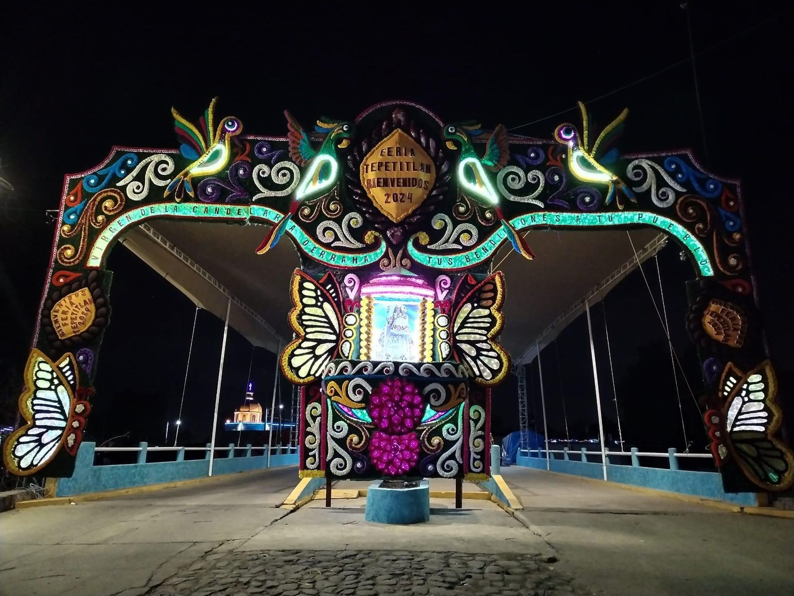

Chiconcuac es conocido por su vibrante Fiesta de San Miguel Arcángel, que se celebra a finales de septiembre. Durante esta festividad, los habitantes realizan danzas tradicionales, desfiles y actividades religiosas. Entre las danzas más destacadas se encuentran la Danza de los Arcos y la Danza de los Machetes. La gastronomía local incluye deliciosos platillos como los tamales y el mole, que se disfrutan durante las festividades. Además, es común encontrar artesanías locales como textiles y cerámica, que reflejan la rica tradición artesanal del pueblo.
Chiconcuac
Este 29 de septiembre, desde temprana hora cientos de artesanos y pobladores se dieron cita en la explanada principal de la localidad, frente al atrio de la iglesia de San Miguel Arcángel, para festejar a su santo patrono. Previamente, la iglesia y su atrio fue adornada con cientos de pequeñas prendas como suéteres, chalecos, bufandas, abrigos y gorros, hechos de lana por los artesanos, que cuelgan como tendederos. También, cada padrino elegido días antes, viste a los arcángeles y adorna el interior de la parroquia.
Tepetitlan
Tepetitlán se destaca por sus festividades y celebraciones únicas. Una de las más importantes es la Fiesta de la Candelaria, celebrada en febrero. Durante esta celebración, los pobladores realizan procesiones, ceremonias religiosas y eventos culturales que incluyen música y baile. La comunidad se une para celebrar con una serie de actividades que reflejan la riqueza cultural del pueblo.

La Fiesta de la Candelaria es una celebración importante en Tepetitlán, Estado de México. Durante esta festividad, que se lleva a cabo en febrero, la comunidad se reúne para honrar a la Virgen de la Candelaria, una figura religiosa venerada en la tradición católica. Durante la Fiesta de la Candelaria, se realizan diversas actividades que incluyen procesiones, ceremonias religiosas, eventos culturales, música y baile. Los pobladores suelen vestirse con trajes típicos y participar en las actividades festivas con gran entusiasmo.

Una de las características destacadas de esta festividad son las danzas tradicionales, como la Danza de los Concheros, que es una manifestación cultural arraigada en la región y que se realiza como una forma de expresión de la fe y la identidad cultural de la comunidad.
Además de las actividades religiosas, la Fiesta de la Candelaria también ofrece una variedad de alimentos típicos y platillos tradicionales que se comparten entre los asistentes. Es una ocasión para disfrutar de la gastronomía local y compartir momentos de convivencia con familiares y amigos.
Tepetlaoxtoc
Tepetlaoxtoc se distingue por sus tradiciones ancestrales y su folklore. Las fiestas patronales en honor a San Bartolomé, celebradas en agosto, son el evento principal del año. Las danzas prehispánicas y los rituales religiosos son parte integral de estas festividades, junto con la participación comunitaria en procesiones y eventos culturales. La música tradicional y los bailes folclóricos también son componentes esenciales de las celebraciones, ofreciendo una experiencia cultural rica y diversa. La gastronomía incluye platillos como el barbacoa, mixiotes y tlacoyos, que son preparados y disfrutados por toda la comunidad.
La celebración de San Bartolomé en Tepetlaoxtoc, Estado de México, es una festividad emblemática que honra a este santo patrón. Esta celebración se lleva a cabo en agosto y es una ocasión para que la comunidad se reúna y participe en diversas actividades religiosas y culturales. Durante la festividad de San Bartolomé, se realizan procesiones solemnes en honor al santo, en las cuales se lleva su imagen por las calles del pueblo. Estas procesiones suelen estar acompañadas de música, cánticos y oraciones por parte de los fieles.